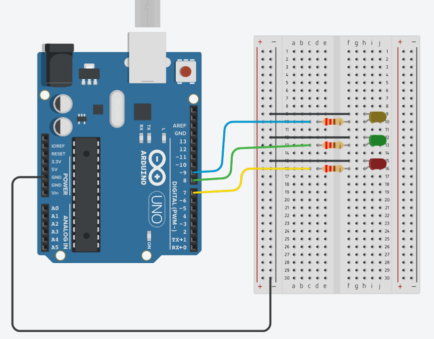
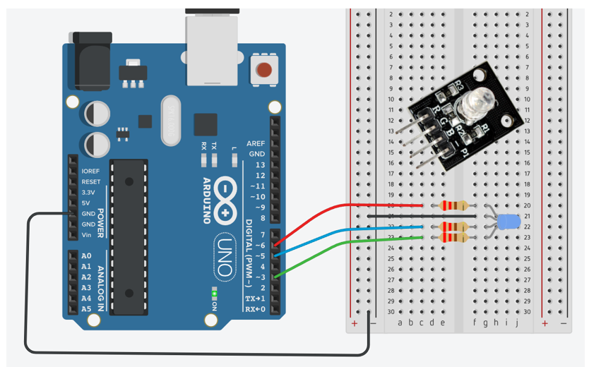
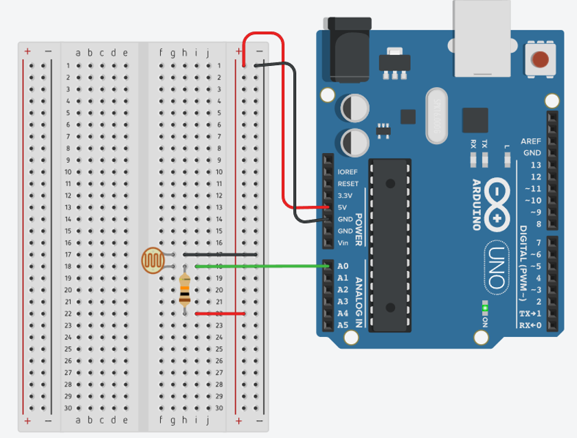
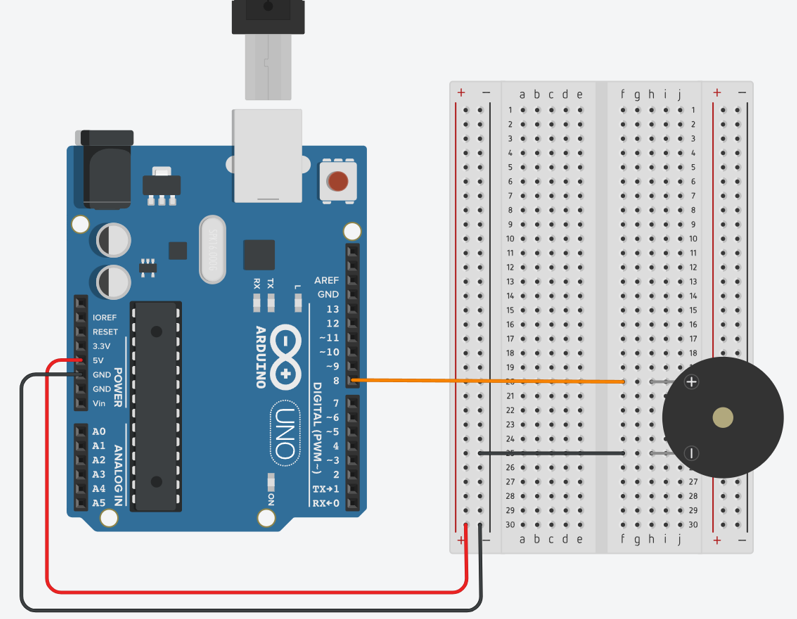
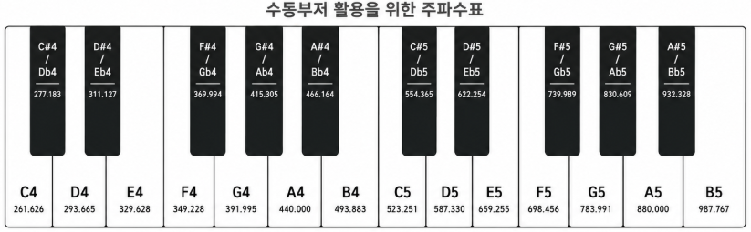
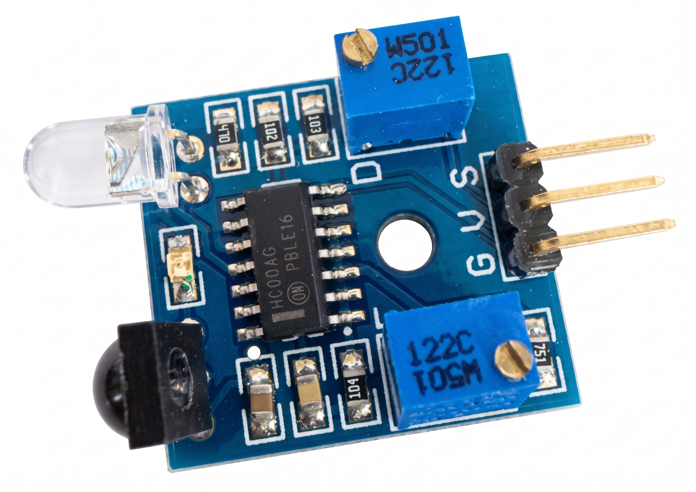
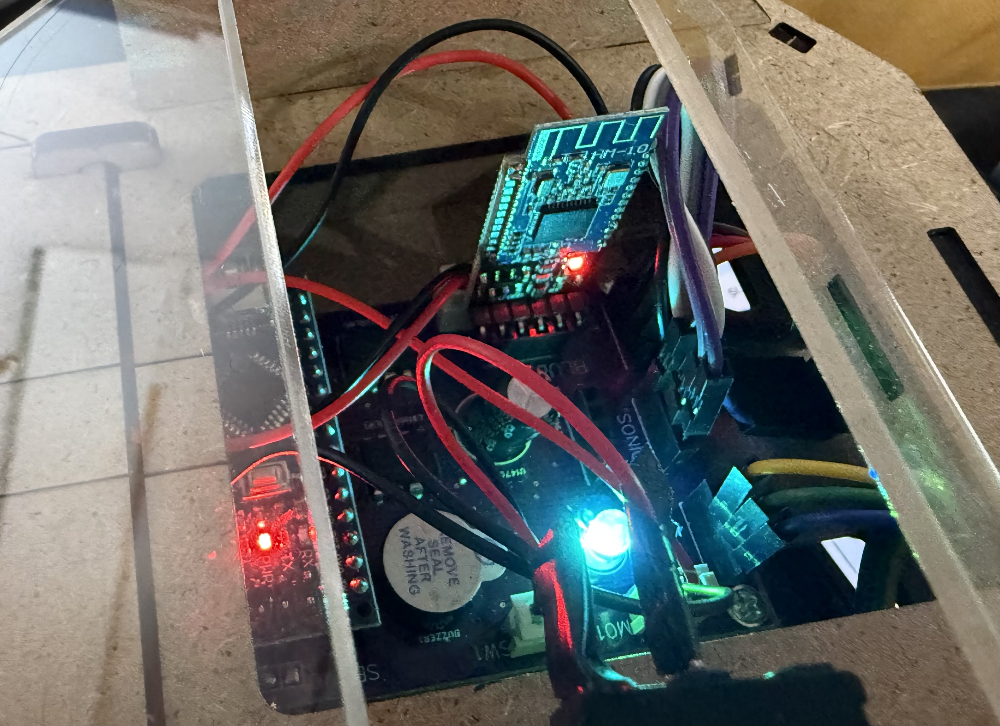
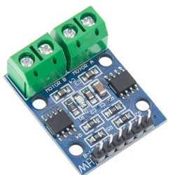

2. 사용 중인 OS 환경에 맞는 설치 파일(Windows Win 10 and newer, macOS 등)을 선택해 다운로드합니다.
3. 기부 안내 창이 뜨면 'Just Download' 버튼을 클릭하여 무료로 다운로드를 진행합니다.
4. 다운로드된 설치 프로그램(.exe 등)을 실행하여 기본 설정대로 설치를 완료합니다.
개발 환경 구축 및 포트 설정
1. PC와 아두이노 우노(UNO) 보드를 USB 케이블로 연결합니다.
2. 아두이노 IDE 상단 메뉴의 [도구] → [보드] → [Arduino Uno]를 차례로 선택합니다.
3. [도구] → [포트] 메뉴에서 인식된 [COM포트 번호]를 선택합니다.
4. 보드 인식이 안 되는 호환 제품의 경우 전용 통신 칩셋인 CH340 드라이버를 꼭 추가 설치해야 정상 인식됩니다.
실습 1: 7번 디지털 핀에 LED 연결 후 1초 간격 토글(점멸)Digital Write
회로 결선 안내:
• 아두이노 7번 핀 → 220옴 저항
• 저항 → LED 긴 다리 (Anode, +극)
• LED 짧은 다리 (Cathode, -극) → 아두이노 GND
저항을 생략할 경우 과전류로 인해 LED 수명이 급감하거나 손상되므로 반드시 220Ω 저항을 사용해 주세요.
Sketch Code
// [1차시 기본 예제] 디지털 출력 제어로 LED 깜빡이기
void setup() {
pinMode(7, OUTPUT); // 7번 디지털 핀을 출력(OUTPUT) 모드로 설정 (전류를 보낼 준비를 함)
}
void loop() {
digitalWrite(7, HIGH); // 7번 핀에 5V(HIGH) 전압을 출력하여 LED를 켬
delay(1000); // 1000ms(1초) 동안 프로그램을 멈추고 현재 상태(켜짐)를 유지
digitalWrite(7, LOW); // 7번 핀에 0V(LOW) 전압을 출력하여 LED를 끔
delay(1000); // 대기 (1초)
}
2차시RGB LED, 조도센서, 스위치 & 부저
2차시 주요 장치/개념 설명
• RGB LED
빨강(R), 초록(G), 파랑(B) 세 가지 색상의 LED가 패키징된 소자입니다. 아두이노의 아날로그 PWM 핀을 연결하여 빛의 세기를 0~255 단계로 조합하면 보라색, 노란색 등 천만 가지의 다채로운 색을 직접 만들어낼 수 있습니다.
• 조도센서 (Cds)
황화카드뮴(Cds)을 사용하여 빛의 밝기를 감지하는 반도체 센서입니다. 빛의 세기가 강할수록 저항값이 작아져 전압이 변하며 아두이노 아날로그 핀(A0~A5)을 통해 0(아주 어두움)~1023(아주 밝음)의 전압 디지털 값으로 리딩합니다.
• 택트 스위치와 풀업저항
물리적으로 회로를 끊거나 이어주는 소자입니다. 스위치가 떨어져 있을 때 전위가 불완전해져 0과 1사이를 떠도는 플로팅(Floating) 현상을 예방하기 위해 내장 풀업 저항(`INPUT_PULLUP`)을 설정하여 평소엔 1, 버튼이 눌리면 0(LOW)을 읽어냅니다.
• 부저 (Buzzer)
전류를 흘려 소리를 발생시키는 소자입니다. 내부 발진 회로가 있어 전원만 넣으면 단음이 나는 능동 부저(Active)와 발진 회로가 없어 아두이노의 `tone()` 함수를 이용해 주파수 신호를 주어야 다양한 음계를 연주할 수 있는 수동 부저(Passive)가 있습니다.
PWM (펄스 폭 변조)
디지털 신호로 아날로그 출력을 흉내 내는 기술. 밝기나 전압 레벨을 0(완전 오프)부터 255(완전 온)까지 세밀하게 제어할 수 있습니다.
내부 풀업 저항
플로팅 현상(전압이 떠 있는 불안정한 상태)을 막기 위해 아두이노 내장 저항을 통해 풀업 상태로 고정. 스위치를 누르면 LOW 신호가 입력됩니다.
🚩 실습1 : 디지털 출력 7, 8, 9번 핀에 연결된 LED 켜기
Digital Output

회로 설명: 7번(빨강), 8번(노랑), 9번(초록) 디지털 핀에 각각 220Ω 저항을 거쳐 LED를 연결하고 짧은 다리는 공통 GND에 연결합니다.
void setup()
{
pinMode(7, OUTPUT); // 빨간 LED
pinMode(8, OUTPUT); // 노란 LED
pinMode(9, OUTPUT); // 초록 LED
}
void loop()
{
// 7번 LED ON, 나머지 OFF
digitalWrite(7, HIGH);
digitalWrite(8, LOW);
digitalWrite(9, LOW);
delay(1000);
// 8번 LED ON, 나머지 OFF
digitalWrite(7, LOW);
digitalWrite(8, HIGH);
digitalWrite(9, LOW);
delay(1000);
// 9번 LED ON, 나머지 OFF
digitalWrite(7, LOW);
digitalWrite(8, LOW);
digitalWrite(9, HIGH);
delay(1000);
}
🚩 실습3 : RGB LED 아날로그 출력 3, 5, 6번 핀에 연결된 LED 켜기
PWM AnalogWrite

회로 설명: RGB 모듈의 R, G, B 핀을 각각 아두이노의 PWM 제어가 가능한 3, 5, 6번 디지털 핀에 연결합니다.
RGB_LED1.ino
void setup()
{
pinMode(3, OUTPUT);
pinMode(5, OUTPUT);
pinMode(6, OUTPUT);
}
void loop()
{
analogWrite(3, 255); // R 채널 최대 밝기
analogWrite(5, 0);
analogWrite(6, 0);
delay(1000);
}
🚩 실습4 : 조도센서 아날로그 입력핀 A0 연결
Analog Read

회로 설명: 조도 센서의 한쪽 단자는 5V에, 다른 쪽 단자는 아날로그 A0 핀과 연결하며 풀다운을 위해 10KΩ 저항을 거쳐 GND에 연결합니다.
회로 설명: 택트 스위치 한쪽을 디지털 2번 핀에 연결하고, 다른 대각선 단자를 GND에 바로 연결해 아두이노 내부 풀업 회로를 활용합니다.
TactSwitch.ino
void setup()
{
Serial.begin(9600);
pinMode(2, INPUT_PULLUP); // 버튼 입력 (내부 풀업 저항 사용, 평소 HIGH, 눌리면 LOW)
}
void loop()
{
int button = digitalRead(2); // 버튼 상태 읽기
Serial.println(button); // 시리얼 출력
delay(100); // 노이즈 방지를 위한 짧은 딜레이
}
🚩 실습6 : 부저(Buzzer) 소리 멜로디 출력
Tone Generator


회로 설명: 수동 부저의 (+)단자를 8번 디지털 핀에, (-)단자를 GND 핀에 체결합니다.
Buzzer.ino
int read;
void setup()
{
Serial.begin(9600);
pinMode(8, OUTPUT);
tone(8, 523, 1000); // 8번핀에서 도 음 출력(C5 = 523Hz) 1초 동안 유지
delay(1000);
}
void loop()
{
delay(10);
}
3차시서보모터·DC모터를 활용한 출력장치 제어
3차시 주요 장치/개념 설명
• 초음파 거리센서 (HC-SR04)
약 40kHz의 초음파를 순간적으로 보낸 뒤 장애물에 부딪혀 되돌아오는 시간(Echo)을 측정하여 물체와의 거리를 구합니다. 소리의 전파속도(340m/s)를 기반으로 하여 `거리 = (왕복 시간 * 0.034) / 2` 계산 공식이 성립합니다.
• 서보모터 (SG-90)
일반 모터와 달리 0도에서 180도 사이의 특정 회전 각도를 세밀하게 고정/지정할 수 있는 모터입니다. 기어 뭉치와 제어회로가 내장되어 로봇 관절이나 주차 바게이트 등에 다양하게 활용됩니다.
• DC 기어드 모터
직류(DC) 전원을 넣으면 한 방향으로 고속 연속 회전하는 일반 모터에 감속 기어를 결합해 속도는 낮추고 힘(토크)을 키운 장치입니다. 주로 스마트 RC카의 구동 바퀴 회전에 쓰입니다.
• 모터드라이버 및 외부 전원
아두이노 출력 핀의 낮은 전류(최대 40mA)로는 모터의 높은 부하를 감당하기 불가능합니다. 따라서 모터드라이버(L298 등)에 외부 고전류 전원을 별도로 연결하고, 아두이노는 신호 제어만 주도하는 형태로 결선합니다.
거리 계산 공식
초음파 전파 비행 시간 계산식
초음파 속도는 약 340m/s(또는 0.034cm/μs)입니다. 소리가 왕복하여 다녀온 마이크로초 단위의 데이터를 활용하여, 단방향 실제 물체까지의 거리를 계산하기 위해 다음 공식을 활용합니다.
distance = ( duration * 0.034 ) / 2
🚩 실습1 : 초음파 거리센서 거리측정
HC-SR04 distance
회로 설명: VCC → 5V, GND → GND, Trig → 6번 디지털 핀(출력), Echo → 5번 디지털 핀(입력)
Ultrasonic.ino
void setup() {
Serial.begin(9600); // 시리얼 통신 속도 설정 (9600bps)
pinMode(6, OUTPUT); // Trig 핀 (초음파 발사) → 출력 설정
pinMode(5, INPUT); // Echo 핀 (초음파 수신) → 입력 설정
}
void loop() {
// 초음파 발사
digitalWrite(6, LOW); // Trig 핀 초기화
delayMicroseconds(2);
digitalWrite(6, HIGH); // Trig 핀 HIGH → 초음파 발사
delayMicroseconds(10);
digitalWrite(6, LOW); // 트리거 신호 종료
// Echo 핀으로부터 초음파 반사 시간 측정
float duration = pulseIn(5, HIGH);
// 거리 계산 (단위: cm)
float distance = ((340.0 * duration) / 2.0) / 10000.0;
// 시리얼 모니터에 거리 출력
Serial.println(distance);
delay(500); // 0.5초마다 반복
}
🚩 실습2 : 서보모터 기본 연결 및 각도 90도 회전
Servo Setup
회로 설명: 주황색(신호선) → 3번 디지털 핀, 빨간색(VCC) → 5V, 갈색(GND) → GND
servo.ino
#include <Servo.h>
Servo myservo;
void setup() {
myservo.attach(3); // 서보모터를 3번 핀에 연결
myservo.write(90); // 90도 기본 각도로 조종
}
void loop() {
// put your main code here, to run repeatedly:
}
🚩 실습3 : 서보모터 0도 → 90도 → 180도 → 90도 왕복 동작
Servo Sweep
스위프 제어:
라이브러리를 통해 각도를 지정하고 각 목표 각도 사이사이에 모터가 기계적으로 회전할 수 있는 충분한 물리 시간(delay)을 할당해야 합니다.
• setup() 과 loop()
아두이노 프로그램은 반드시 전원 인가 시 1번 실행되는 setup()과 무한 반복 구동되는 loop()를 포함해야 정상 구동됩니다.
• 대소문자 완전 구분 (Case-Sensitive)
C언어 특성상 대소문자가 다르면 전혀 다른 함수로 취급합니다. 오류 예시:pinmode() (x) → pinMode() (o) 오류 예시:digitalwrite() (x) → digitalWrite() (o)
• 주석 사용법 (Comment)
- // 한 줄 주석 : 슬래시 두 개 이후 줄 끝까지 설명문 처리.
- /* 여러 줄 주석 */ : 블록 구간 전체 설명문 처리.
핵심 데이터 타입 (변수) 및 딜레이
• 정수형 변수 (int)
소수점이 없는 양수, 음수를 저장합니다. 핀 번호 설정이나 센서의 원시 리딩값을 저장할 때 씁니다. int ledPin = 13;
• 실수형 변수 (float)
소수점이 포함된 정밀한 소수를 다룹니다. 초음파 센서 거리 센싱 공식 계산 결과에 사용됩니다. float distance = 12.34;
• 대기 함수 delay() & delayMicroseconds()
- delay(1000): 프로그램 동작을 1000밀리초(1초) 멈춥니다.
- delayMicroseconds(10): 마이크로초(1/1,000,000초) 단위로 정밀하고 미세하게 프로그램을 멈춥니다. (초음파 트리거 발사 펄스 제어에 활용)
1. 대입 및 산술 연산자
변수에 값을 저장하거나 센서 수치 계산, 타이머 등에 사용됩니다.
연산자
기호
예시
설명
대입
=
speed = 200;
오른쪽 값을 왼쪽 변수에 저장
덧셈
+
val = a + 10;
두 값의 합
뺄셈
-
remain = maxVal - curVal;
두 값의 차
곱셈
*
total = count * 5;
두 값의 곱
나눗셈
/
avg = sum / 3;
두 값의 몫
나머지
%
step = tick % 4;
나눈 후 나머지 (주기적 패턴 생성 시 활용)
2. 비교(관계) 연산자
if, while 문 등에서 조건을 비교할 때 사용하며, 결과는 참(true/1) 또는 거짓(false/0)입니다.
연산자
기호
예시
설명
같음
==
if (sensor == LOW)
두 값이 같으면 참 (= 대입 연산자와의 혼동 주의!)
같지 않음
!=
if (state != 0)
두 값이 다르면 참
크다 / 작다
>, <
if (distance < 10)
크기 비교 (초과/미만)
이상 / 이하
>=, <=
if (val >= 255)
크기 비교 (이상/이하)
3. 논리 연산자
여러 센서 조건이나 버튼 입력을 조합할 때 사용합니다.
연산자
기호
예시
설명
논리 AND
&&
if (leftSensor == LOW && rightSensor == LOW)
둘 다 참일 때만 참 (예: 양쪽 센서 모두 장애물 감지 시)
논리 OR
||
if (frontDist < 10 || backDist < 10)
둘 중 하나라도 참이면 참
논리 NOT
!
digitalWrite(ledPin, !digitalRead(ledPin));
참/거짓을 반전시킴 (토글 스위치 상태 반전 구현 시 활용)
4. 복합 대입 및 증감 연산자
변수의 값을 간결하게 갱신하거나 루프 카운트를 증가시킬 때 사용합니다.
연산자
기호
예시
동일한 표현
증가
++
count++;
count = count + 1;
감소
--
timer--;
timer = timer - 1;
복합 덧셈
+=
speed += 10;
speed = speed + 10;
복합 뺄셈
-=
speed -= 10;
speed = speed - 10;
5. 비트(Bitwise) 연산자 (고급/하드웨어 제어)
포트 직접 제어나 레지스터 설정, 통신 패킷 파싱 시 주로 사용되는 고급 연산 장치입니다.
& (비트 AND)
지정한 비트 필드 중 특정 값만 축출하는 마스크 연산 시 사용
| (비트 OR)
기존 레지스터 값에 영향 없이 특정 위치 비트만 1로 셋업할 때 사용
^ (비트 XOR)
두 비트가 서로 다를 때만 1을 내어, 특정 데이터 비트를 반전시킬 때 사용
~ (비트 NOT)
모든 비트의 0을 1로, 1을 0으로 뒤집어 1의 보수를 계산
<<, >> (비트 시프트)
지정한 비트 칸 수만큼 데이터를 좌/우측으로 이동 (곱하기 2 / 나누기 2 대체 속도 개선법)
핵심 입출력 시스템 함수 정리
1. pinMode(핀번호, 모드)
지정한 디지털 핀의 방향을 결정합니다.
OUTPUT: 전류를 밖으로 밀어낼 때 사용합니다. (LED, 모터, 부저)
INPUT: 전압 신호를 받아올 때 사용합니다. (일반 센서)
INPUT_PULLUP: 내부 풀업 저항을 활성화하여 평소 HIGH, 눌렸을 때 LOW를 받도록 구성합니다. (스위치)
2. digitalWrite(핀번호, 상태값)
디지털 핀으로 출력 신호를 강하게 쏘거나 차단합니다.
HIGH: 5V (또는 3.3V) 신호를 핀에 공급하여 소자를 켭니다.
LOW: 0V 신호로 내려 전류를 완전히 차단해 소자를 끕니다.
제어 구조 조건문(if) 및 반복문(while)
• 조건 분기문 (if / else if / else)
조건의 참(true), 거짓(false)을 판단해 각각 다른 코드를 실행시킵니다.
if (sensorValue == LOW) {
// 조건이 맞을 때(참) 실행할 코드
digitalWrite(13, HIGH);
} else {
// 조건이 안 맞을 때(거짓) 실행할 코드
digitalWrite(13, LOW);
}
• 무한/조건 반복문 (while)
조건이 만족되는 동안 중괄호 안의 명령을 계속해서 반복 순회합니다.
while (distance < 10) {
// 거리가 10cm 미만일 동안 계속 사이렌을 울림
tone(8, 880);
delay(100);
noTone(8);
delay(100);
// 거리를 다시 읽어 루프 탈출 조건 검사
distance = readDistance();
}
아두이노 중급: RC카 & 다관절 로봇팔 융합 프로젝트 로드맵
중급 교육과정 안내
기초과정에서 배운 단일 센서 제어와 블루투스 통신 메커니즘을 융합하여, 직접 주행이 가능한 스마트 RC카와 각 관절을 스마트폰으로 조작하는 다관절 로봇팔(Robot Arm)을 설계하고 코딩하는 심화 실전 프로젝트 과정입니다.
1차시
중급 1차시: IR 적외선 장애물 감지 센서 제어
적외선 송수신 다이오드를 사용하여 전방 장애물을 감지하고 감지 시 아두이노 보드의 13번 내장 LED를 제어하는 코딩.
학습 가능
2차시
중급 2차시: 스마트 무선 조종 RC카 코딩 및 라인트레이싱
HM-10 블루투스 모듈과 L9110S 모터 드라이버, 2채널 라인센서를 제어하여 스마트폰 무선 주행 및 자율 라인트레이싱 구현.
학습 가능
3차시
다관절 로봇팔 하드웨어 결선 및 기본 각도 교정 (비활성화)
서보모터 4개의 기계 결합 및 과부하 방지를 위한 초기 위치 캘리브레이션 설정.
대기 중
4차시
스마트 무선 조종 로봇팔 애플리케이션 제어 프로젝트 (비활성화)
조이스틱 수신 신호와 4축 서보 제어를 연결하여 최종 물체 파지 및 이송 프로젝트 완성.
대기 중
중급 1차시IR 적외선 장애물 감지 센서 제어
중급 1차시 주요 장치/개념 설명

• IR 적외선 장애물 감지 센서 (Infrared Obstacle Avoidance Sensor)
적외선 송신부에서 적외선 빛을 방출하고 물체에 반사되어 돌아오는 적외선 빛의 양을 수신부(포토다이오드)가 감지하여 장애물 유무를 확인합니다. 장애물이 감지되면 디지털 신호 LOW(0)를 아두이노로 전달합니다.
🚩 중급 실습1 : IR 적외선 장애물 감지 센서 제어
Infrared Sensor Control
결선 방법:
센서 VCC → 아두이노 5V
센서 GND → 아두이노 GND
센서 OUT (또는 S) → 아두이노 D2 (디지털 입력)
IR_Obstacle_Sensor.ino
const int sensorPin = 2; // 센서의 S(Signal) 핀을 디지털 2번에 연결
const int ledPin = 13; // 아두이노 내장 LED (13번)
void setup() {
pinMode(sensorPin, INPUT);
pinMode(ledPin, OUTPUT);
Serial.begin(9600);
}
void loop() {
int sensorValue = digitalRead(sensorPin);
// 일반적인 적외선 센서는 물체 감지 시 LOW(0)를 출력합니다.
if (sensorValue == LOW) {
Serial.println("장애물 감지!");
digitalWrite(ledPin, HIGH); // 물체가 있으면 내장 LED 켜짐
} else {
Serial.println("감지 안 됨");
digitalWrite(ledPin, LOW); // 물체가 없으면 내장 LED 꺼짐
}
delay(200);
}
🚩 중급 실습2 : IR 장애물 감지 센서로 DC모터 제어하기
IR & DC Motor Control
결선 방법:
IR 센서 Signal(S) → 아두이노 D2 핀
L9110S A-1A (속도) → D9 핀 (PWM 출력)
L9110S A-1B (방향) → D8 핀 (출력)
장애물이 나타나면 사고 방지를 위해 모터를 정지하고, 장애물이 사라지면 다시 200의 속도로 안전 주행을 전개하도록 동작합니다.
IR_DC_Motor_Control.ino
/*
* IR 적외선 장애물 감지 센서 & L9110S 모터 드라이버 제어 코드
*
* [핀 연결]
* - IR 센서 Signal(S) : Digital 2번 핀
* - L9110S A-1A (속도) : Digital 9번 핀 (PWM 지원)
* - L9110S A-1B (방향) : Digital 8번 핀
*/
const int sensorPin = 2; // IR 적외선 센서 신호 핀 (S)
const int motorPinA = 9; // L9110S A-1A (PWM 속도 제어 핀)
const int motorPinB = 8; // L9110S A-1B (방향 제어 핀)
// 주행 속도 설정 (0: 정지 ~ 255: 최대 속도)
const int driveSpeed = 200;
void setup() {
// 핀 모드 설정
pinMode(sensorPin, INPUT);
pinMode(motorPinA, OUTPUT);
pinMode(motorPinB, OUTPUT);
// 시리얼 모니터 시작 (9600 보드레이트)
Serial.begin(9600);
Serial.println("시스템 준비 완료: 주행을 시작합니다.");
}
void loop() {
// IR 센서 값 읽기 (장애물 감지 시 LOW, 미감지 시 HIGH)
int obstacle = digitalRead(sensorPin);
if (obstacle == LOW) {
// [장애물 감지됨] -> 모터 정지
digitalWrite(motorPinA, LOW);
digitalWrite(motorPinB, LOW);
Serial.println("[경고] 장애물 감지: 모터 정지");
} else {
// [장애물 없음] -> 전진 주행
analogWrite(motorPinA, driveSpeed); // 9번 핀으로 속도 조절
digitalWrite(motorPinB, LOW); // 8번 핀 LOW 고정
Serial.println("[정상] 전방 이상 없음: 모터 주행 중...");
}
// 0.05초 대기 (안정적인 센싱 주기)
delay(50);
}
중급 2차시스마트 무선 조종 RC카 코딩 및 라인트레이싱
중급 2차시 주요 장치/개념 설명

• HM-10 BLE 블루투스 모듈
스마트폰 웹앱과 무선 직렬(UART) 통신을 수행합니다. 아두이노 SoftwareSerial(3번 RX, 2번 TX) 핀으로 주행 명령 문자(1~7)를 전달받습니다.

• L9110S 2채널 모터 드라이버
아두이노의 낮은 출력 전류를 모터 구동 전력으로 증폭합니다. PWM 신호(D9, D5)로 좌우 바퀴의 정밀 속도 제어와 정역회전(전진/후진)을 조절합니다.
• 2채널 적외선 라인 트레이서 센서
바닥에 적외선을 쏘아 반사되는 양으로 검은색 트랙(LOW)과 흰색 바탕(HIGH)을 판별하여 선을 이탈하지 않고 자율 주행을 구현합니다.
중급 2차시 아두이노 핀 연결 구성표
📶 HM-10 블루투스
TX → 아두이노 D3 (RX)
RX → 아두이노 D2 (TX)
전원: VCC(5V), GND 연결
⚙️ L9110S 모터 드라이버
왼쪽(A): A-IA D9, A-IB D8
오른쪽(B): B-IA D5, B-IB D4
VCC(모터 전원 배터리), GND 연결
〰️ 2채널 라인센서
왼쪽 센서 OUT → D11
오른쪽 센서 OUT → D10
검은색 감지 시 LOW 신호 입력
🚩 중급 실습1 : RC카 모터 구동 및 블루투스 기초 테스트
테스트 명령 규칙:
모터 드라이버(L9110S)와 블루투스(HM-10) 통신 연결을 확인하고 바퀴가 정상 회전하는지 점검하는 기초 코드입니다.
1 : 전진 (Forward, 좌우 모터 전진 회전)
0 : 정지 (Stop, 모든 모터 정지)
* 스마트폰 블루투스 앱 또는 아두이노 IDE 시리얼 모니터(9600 Baud)에서 1과 0을 전송해 테스트할 수 있습니다.
팁: 만약 한쪽 바퀴가 반대로 회전한다면 해당 모터의 결선(A-IA, A-IB 또는 B-IA, B-IB) 핀을 서로 맞바꿔 꽂으면 정방향으로 회전합니다.
rccar_motor_5s.ino
#include <SoftwareSerial.h>
// ==========================================
// HM-10 Bluetooth
// Arduino D3(TX) -> HM-10 RX
// Arduino D2(RX) <- HM-10 TX
// ==========================================
SoftwareSerial bluetooth(3, 2);
// ==========================================
// L9110S Motor
// ==========================================
// A Motor
const int motorA_IA = 9;
const int motorA_IB = 8;
// B Motor
const int motorB_IA = 5;
const int motorB_IB = 4;
// Motor speed (0~255)
const int driveSpeed = 200;
void setup() {
// Motor pin setting
pinMode(motorA_IA, OUTPUT);
pinMode(motorA_IB, OUTPUT);
pinMode(motorB_IA, OUTPUT);
pinMode(motorB_IB, OUTPUT);
// Motor stop
stopMotors();
// USB Serial Monitor
Serial.begin(9600);
// HM-10
bluetooth.begin(9600);
Serial.println("============================");
Serial.println("HM-10 Bluetooth Test");
Serial.println("============================");
Serial.println("Bluetooth : 1 = Forward");
Serial.println("Bluetooth : 0 = Stop");
Serial.println("");
Serial.println("You can also type 1 or 0");
Serial.println("in Serial Monitor.");
Serial.println("============================");
}
void loop() {
// ======================================
// 1. HM-10 Bluetooth receive
// ======================================
if (bluetooth.available()) {
char command = bluetooth.read();
Serial.print("[Bluetooth RX] ");
Serial.print("Character = ");
Serial.print(command);
Serial.print(" / ASCII = ");
Serial.println((int)command);
controlMotor(command);
}
// ======================================
// 2. Serial Monitor receive
// ======================================
if (Serial.available()) {
char command = Serial.read();
// Ignore Enter and Line Feed
if (command == '\r' || command == '\n') {
return;
}
Serial.print("[Serial Monitor RX] ");
Serial.println(command);
controlMotor(command);
}
}
// ==========================================
// Command
// ==========================================
void controlMotor(char command) {
if (command == '1') {
Serial.println(">>> FORWARD");
forward();
}
else if (command == '0') {
Serial.println(">>> STOP");
stopMotors();
}
else {
Serial.print(">>> Unknown command : ");
Serial.println(command);
}
}
// ==========================================
// Forward
// ==========================================
void forward() {
// Motor A
analogWrite(motorA_IA, driveSpeed);
digitalWrite(motorA_IB, LOW);
// Motor B
analogWrite(motorB_IA, driveSpeed);
digitalWrite(motorB_IB, LOW);
}
// ==========================================
// Stop
// ==========================================
void stopMotors() {
digitalWrite(motorA_IA, LOW);
digitalWrite(motorA_IB, LOW);
digitalWrite(motorB_IA, LOW);
digitalWrite(motorB_IB, LOW);
}
🚩 중급 실습2 : 2채널 센서 라인트레이싱 자율주행 코딩
라인트레이싱 자율 주행 판단 로직:
왼쪽(D11)
오른쪽(D10)
주행 동작
흰색 (HIGH)
흰색 (HIGH)
직진 전진
검정 (LOW)
흰색 (HIGH)
좌회전 (선 복귀)
흰색 (HIGH)
검정 (LOW)
우회전 (선 복귀)
검정 (LOW)
검정 (LOW)
전진 / 교차로 통과
* 라인트레이싱 시에는 정밀한 방향 보정을 위해 일반 주행보다 낮은 속도(약 80~100)를 권장합니다.
LineTracing_Basic.ino
const int leftSensor = 11;
const int rightSensor = 10;
const int motorA_IA = 9;
const int motorA_IB = 8;
const int motorB_IA = 5;
const int motorB_IB = 4;
const int lineTraceSpeed = 80;
void setup() {
pinMode(leftSensor, INPUT);
pinMode(rightSensor, INPUT);
pinMode(motorA_IA, OUTPUT);
pinMode(motorA_IB, OUTPUT);
pinMode(motorB_IA, OUTPUT);
pinMode(motorB_IB, OUTPUT);
}
void loop() {
int leftVal = digitalRead(leftSensor);
int rightVal = digitalRead(rightSensor);
if (leftVal == LOW && rightVal == HIGH) {
// 왼쪽 검은색 감지 -> 좌회전 보정
digitalWrite(motorA_IA, LOW);
digitalWrite(motorA_IB, LOW);
analogWrite(motorB_IA, lineTraceSpeed);
digitalWrite(motorB_IB, LOW);
} else if (leftVal == HIGH && rightVal == LOW) {
// 오른쪽 검은색 감지 -> 우회전 보정
analogWrite(motorA_IA, lineTraceSpeed);
digitalWrite(motorA_IB, LOW);
digitalWrite(motorB_IA, LOW);
digitalWrite(motorB_IB, LOW);
} else {
// 직진
analogWrite(motorA_IA, lineTraceSpeed);
digitalWrite(motorA_IB, LOW);
analogWrite(motorB_IA, lineTraceSpeed);
digitalWrite(motorB_IB, LOW);
}
delay(30);
}
🚩 중급 실습3 : 스마트폰 웹앱 연동 & 마스터 코드
스마트폰 브라우저(안드로이드 Chrome, 아이폰 Bluefy 등)에서 블루투스 조종 패드로 수동 주행을 조작하다가,
라인트레이싱 시작(명령 6번)을 누르면 센서 기반 자율주행을 시작하고, 라인종료(명령 7번)를 누르면 즉시 수동 제어로 복귀하는 완전체 코드입니다.
스마트폰 웹 조종기 접속 안내
1. 스마트폰과 RC카 전원을 켭니다.
2. 웹 브라우저에서 조종 화면을 열고 [연결하기 🔌]를 눌러 HM-10을 선택합니다.